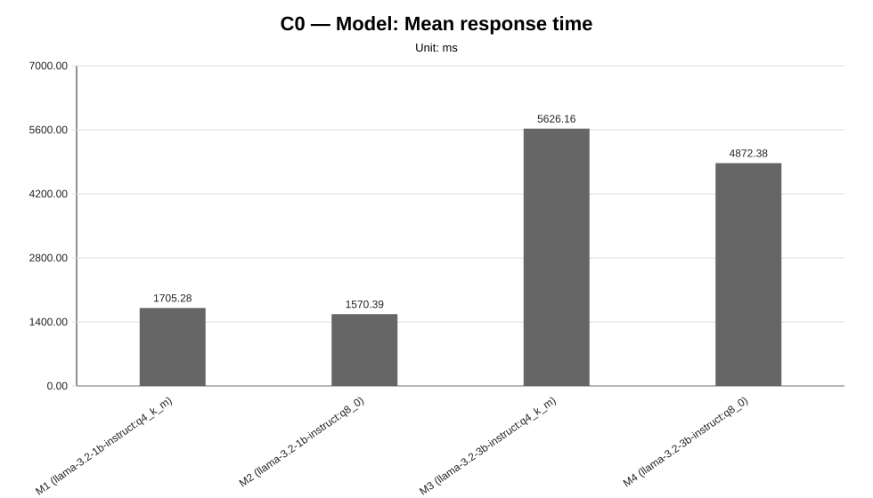
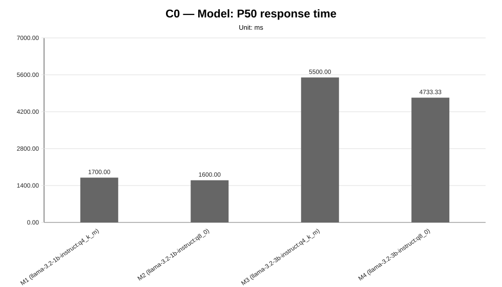
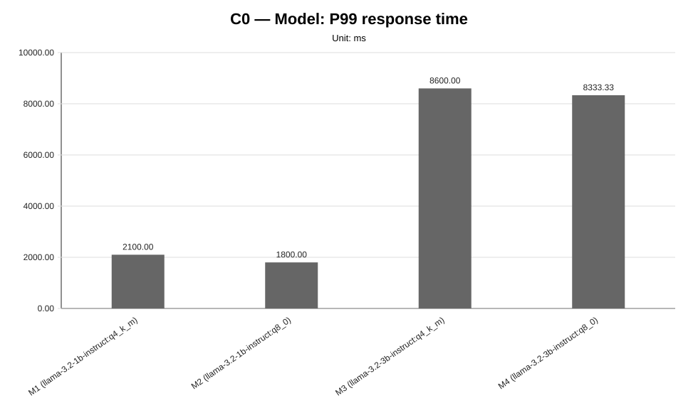
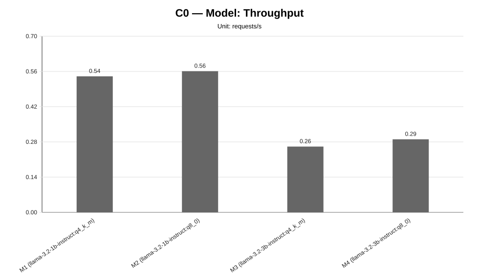
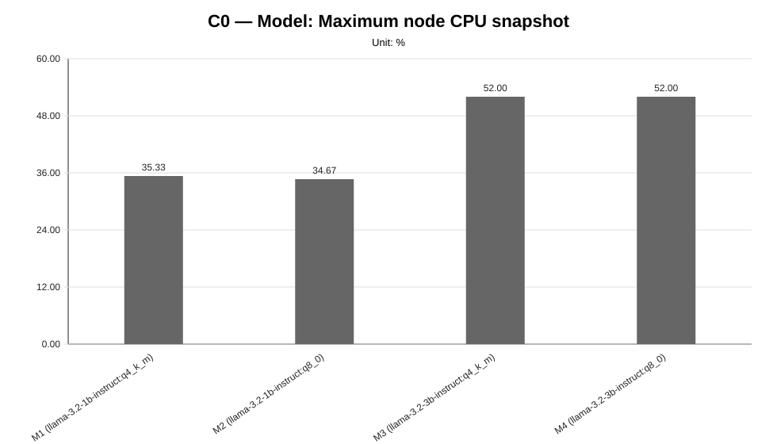
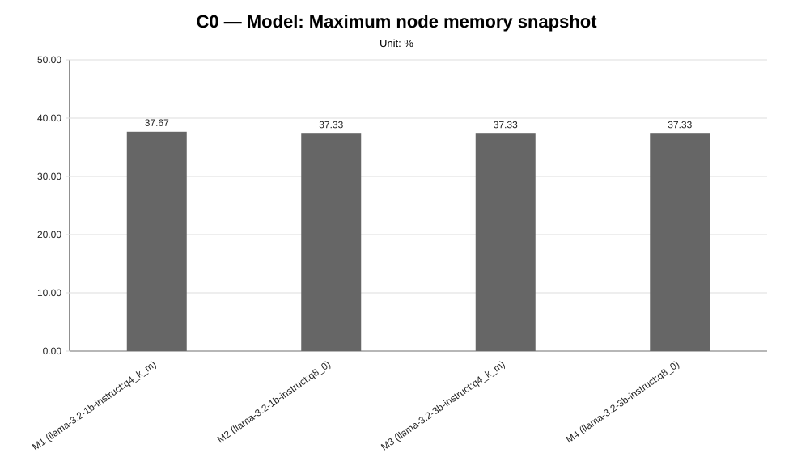
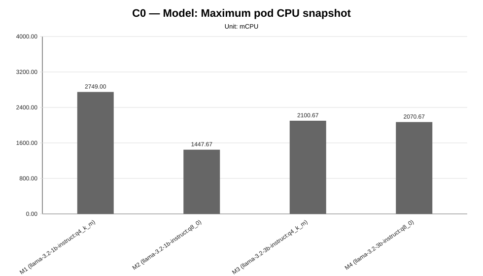
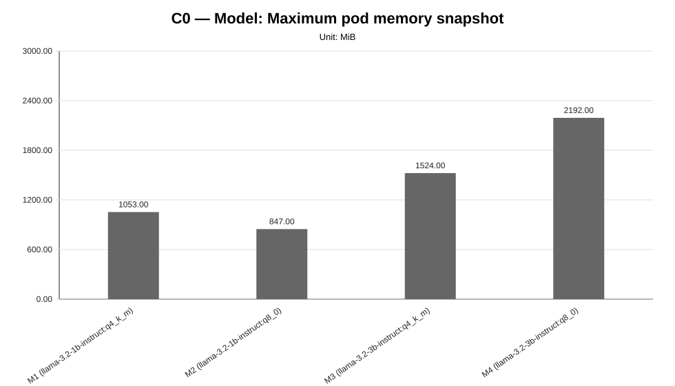

Cycle ID: C0
Sweep: models
Reporting Profile: RP_C0_HISTORICAL_FIXED_CLUSTER
Reporting ID: REP_C0_20260619T174611Z
Generated at UTC: 2026-06-19T17:46:12Z
This sweep-specific report isolates Model so that the varied dimension, fixed dimensions, measured values, unsupported evidence and diagnosis-based reading can be inspected without navigating the full consolidated report.
Execution status: fully_measured
Execution note: All configured scenarios in this sweep have measured benchmark samples.
Varied dimension: model served by the LocalAI worker-mode cluster
Fixed dimensions: baseline worker count, baseline workload, baseline placement, baseline protocol.
Reference scenario within the sweep: M1
| Scenario count | Measured | Unsupported | Missing |
|---|---|---|---|
| 4 | 4 | 0 | 0 |
This table is derived from resolved scenario metadata. A parameter is marked as controlled only when it has the same effective value across all scenarios in the sweep.
| Parameter | Resolved value | Interpretation |
|---|---|---|
| Model | varies across scenarios (4 values) | varied or scenario-specific |
| Worker count | 2 | controlled |
| Placement | colocated_sc_app_02 | controlled |
| Workload | users=2, spawnRate=1, runTime=2m | controlled |
| Topology | infra/k8s/compositions/topology/colocated-sc-app-02-w2 | controlled |
| Server manifest | varies across scenarios (4 values) | varied or scenario-specific |
| Prompt | Reply with only READY. | controlled |
| Temperature | 0.1 | controlled |
| Request timeout (s) | 120 | controlled |
| Scenario | Status | Varied value (model served by the LocalAI worker-mode cluster) | Model | Worker count | Placement | Workload | Timeout (s) |
|---|---|---|---|---|---|---|---|
M1 | measured | llama-3.2-1b-instruct:q4_k_m | llama-3.2-1b-instruct:q4_k_m | 2 | colocated_sc_app_02 | users=2, spawnRate=1, runTime=2m | 120 |
M2 | measured | llama-3.2-1b-instruct:q8_0 | llama-3.2-1b-instruct:q8_0 | 2 | colocated_sc_app_02 | users=2, spawnRate=1, runTime=2m | 120 |
M3 | measured | llama-3.2-3b-instruct:q4_k_m | llama-3.2-3b-instruct:q4_k_m | 2 | colocated_sc_app_02 | users=2, spawnRate=1, runTime=2m | 120 |
M4 | measured | llama-3.2-3b-instruct:q8_0 | llama-3.2-3b-instruct:q8_0 | 2 | colocated_sc_app_02 | users=2, spawnRate=1, runTime=2m | 120 |
This compact table reports the core indicators used to read the sweep at a glance. Detailed percentiles, deltas and resource snapshots are reported in the following extended table.
| Scenario | Description | Status | Sample count | Mean response time (ms) | P95 response time (ms) | Throughput (requests/s) | Unsupported evidence |
|---|---|---|---|---|---|---|---|
M1 | M1 (llama-3.2-1b-instruct:q4_k_m) | measured | 3 | 1705.28 | 1766.67 | 0.5405 | |
M2 | M2 (llama-3.2-1b-instruct:q8_0) | measured | 3 | 1570.39 | 1633.33 | 0.5610 | |
M3 | M3 (llama-3.2-3b-instruct:q4_k_m) | measured | 3 | 5626.16 | 5766.67 | 0.2614 | |
M4 | M4 (llama-3.2-3b-instruct:q8_0) | measured | 3 | 4872.38 | 5000.00 | 0.2903 |
This secondary table keeps the additional metrics aligned with the technical diagnosis while avoiding an excessively wide primary summary table.
| Scenario | P50 response time (ms) | P99 response time (ms) | Mean response time delta (%) | P95 response time delta (%) | Throughput delta (%) | Max node CPU snapshot (%) | Max node memory snapshot (%) | Max pod CPU snapshot (mCPU) | Max pod memory snapshot (MiB) |
|---|---|---|---|---|---|---|---|---|---|
M1 | 1700.00 | 2100.00 | 0.00 | 0.00 | 0.00 | 35.33 | 37.67 | 2749.00 | 1053.00 |
M2 | 1600.00 | 1800.00 | -7.91 | -7.55 | 3.79 | 34.67 | 37.33 | 1447.67 | 847.00 |
M3 | 5500.00 | 8600.00 | 229.93 | 226.42 | -51.64 | 52.00 | 37.33 | 2100.67 | 1524.00 |
M4 | 4733.33 | 8333.33 | 185.72 | 183.02 | -46.29 | 52.00 | 37.33 | 2070.67 | 2192.00 |
strong_signal, confidence: high).high).







not_executed sweep means that neither measurement CSV files nor unsupported-scenario evidence were found for any configured scenario in that family.